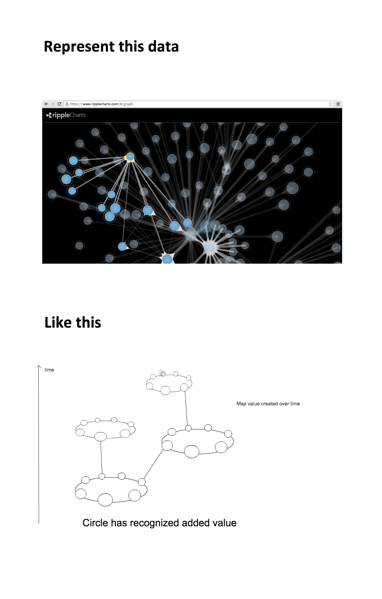

Using P2P value maps and universal darwinism for a crypto basic income system
Johan Nygren
Back in the early 2000s, Ryan Fugger invented something that will come to change the future of economics. He invented Ripple, a P2P credit clearing system.
Some argue that P2P credit is unstable and prone to inflation, and I second that, and I believe Ripple should be combined with some form of stable index. Perhaps something like solarcoin.org — what could be more stable than the energy of a photon ?
What’s amazing about Ripple is not its qualities as a credit ledger, but rather, how it provides a map to how circles of transactions contribute value to one another.
Using Ripple, it’s possible to map how value networks grow, interact, overlap. Ripple shows real growth. It’s absolutely brilliant.

What if future value added, that backtracks to my individual contributions, could give dividends to me ?
Introducing: Taxemes
During a transaction, A and B negotiate how much to donate to the Resilience algorithm. They do so based on the rules that apply to taxemes — autonomous, non-coercive dividend collectors that are hard-wired into their wallets.
A wants the donation to be high, because As future dividends rely on a dividend pathway that is created from A to B. A wants a dividend pathway that has high throughput of future value added, that extends from the value that A provides B (in Ripple, As transaction to B is a promise that A will provide B with the same amount of value that B just gave A).
On Variation, Selection and Heredity
During a transaction from A to B, Bs active taxeme (Bs lowest taxeme) is passed on to A. As future transactions are thus affected by the transaction with B, as A becomes host to Bs taxeme.
This transaction affects As market traction, as his 5% taxeme gets silenced by this new 2% taxeme.
Taxemes spread throughout the network based on this mechanism of variation, selection and heredity.
Taxemes are continuously recycled. They are created, they spread, and they are destroyed.
When A consumes something from the market, he looks for ventures that use high taxemes, as he wants to grow a dividend pathway with a high conductivity for future donations.
The venture on the other hand, has curated high taxemes because it wants to contribute to social resilience. Basically, effective altruism, empowered through an algorithm. And, ventures that are fueled by effective altruists gain a selective advantage, as they attract consumers to the stream of basic income that Resilience provides.
So, there are two opposing forces. A wants to grow dividend pathways so that donations from future value creation can stream back to him, like blood through blood-vessels or electricity flowing through a city. B wants to provide high taxemes because of altruism, and A wants to select high taxemes because of survival instincts.
Summary
The Resilience system is based on Ryan Fugger’s Ripple (2003), and bootstraps on the path-finding algorithm that Ryan conceived. It uses Ripple in a way that no one has thought of thus far.
“In my Basic Income #DApp, your safety net emerges from the sum of your financial interactions, allowing you to live and evolve as a global and mobile citizen. The Resilience protocol transforms the stage upon which we unfold.”
Want to re-publish this, or do you have an idea for where you’d like to see this published ? Message me on Facebook, Twitter or Email